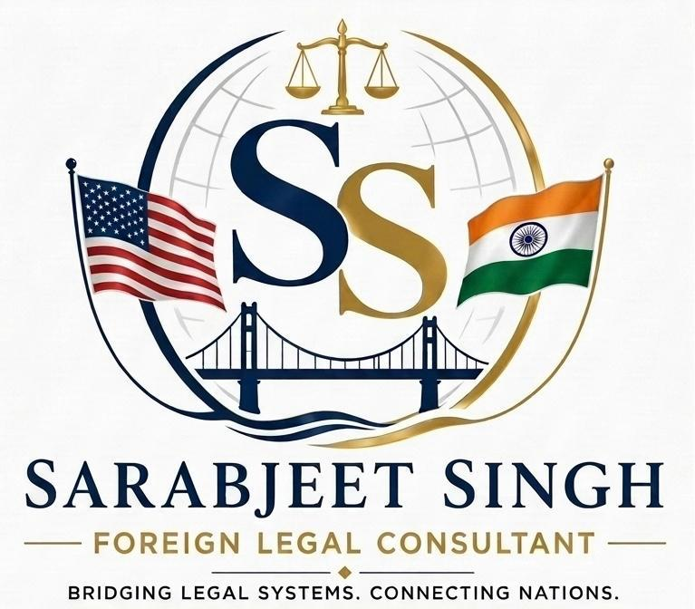

Indian corporate law
Practical consultation on company, commercial, and regulatory matters involving India.

SS Sarabjeet SinghForeign Legal ConsultantIndia · United States
Thoughtful guidance on Indian law for individuals, businesses, and legal professionals navigating India–U.S. matters.
01 / Focus areas
Practical consultation on company, commercial, and regulatory matters involving India.
Indian-law perspective for transactions, collaborations, and business relationships spanning borders.
Guidance on Indian property, municipal, land, and development-related questions.
Context on government processes, public institutions, and regulatory engagement in India.
BRIDGING LEGAL SYSTEMS
CONNECTING NATIONS
02 / The practice
Sarabjeet Singh is a Foreign Legal Consultant based in Arizona, with nearly 19 years of professional legal experience in India. He earned his law degree from Vikram University, Ujjain, Madhya Pradesh, India, and was enrolled with the Bar Council of Punjab and Haryana in 2007.
His practice is grounded in civil and commercial matters, property and land, municipal and development matters, regulatory issues, contracts, and matters involving public authorities.
He works with individuals, businesses, and legal professionals who need reliable Indian-law insight for India–United States matters, international collaboration, or the practical realities of navigating India's legal system.
His approach is grounded in professionalism, integrity, diligence, and client service, with a strong ethical foundation and an international perspective.
View credentials ↓No. 03 / Professional standing
Begin with context
Share a little about your matter through the secure inquiry form. Initial information helps us understand whether an Indian-law consultation is the right next step.